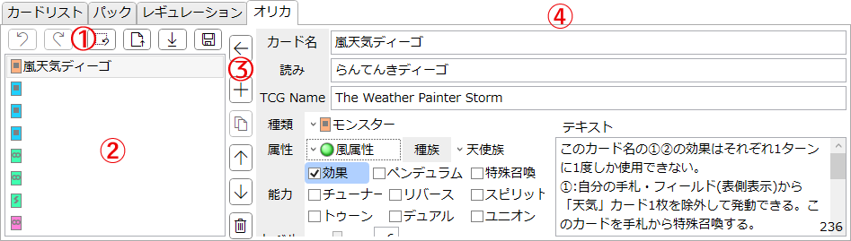
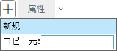

「オリカ」タブ
『遊戯王OCG』に準拠したオリジナルカードを管理するタブです。
お遊び機能であり、ここで編集したカードをデッキ編集などに組み込めるわけではありません。
説明

-
エディットバー
- カードリストの編集に関する操作を行うボタン群です。
-
 : 最後に行った操作を元に戻します。
: 最後に行った操作を元に戻します。
-
 : 最後に元に戻した操作をやり直します。
: 最後に元に戻した操作をやり直します。
- 元に戻す以外の操作を一度でも行うとやり直しはできなくなります。
-
 : 全てのカード情報を削除し、カードリストを空欄にします。
: 全てのカード情報を削除し、カードリストを空欄にします。
-
 : .jsonファイルを読み込んで、その内容を反映します。
: .jsonファイルを読み込んで、その内容を反映します。
-
: .jsonファイルを読み込んで、その内容をカードリストに追加します。
-
によって読み込んだ場合、既存のデータは全て削除されますが、による読み込みでは、既存のデータを残したまま読み込んだデータを追加します。
-
-
 : このカードリストを.jsonファイルとして保存します。
: このカードリストを.jsonファイルとして保存します。
-
カードリスト
- 作成したオリジナルカードが一覧されます。
- 項目を選択すると右側にカード情報が表示されます。
- Shiftキーを押しながら項目をクリックすると、山括弧《》で囲ったカード名がクリップボードにコピーされます。
-
項目の操作
-
 : 右のカード情報欄の編集内容を左のカードリストに反映します。
: 右のカード情報欄の編集内容を左のカードリストに反映します。
- Ctrl+Enterを押すことでも反映できます。
- 「反映」せずに他の項目を選択すると編集内容は破棄されます。ご注意ください。
-
 : 選択されている項目のすぐ下に新たな項目を追加します。
: 選択されている項目のすぐ下に新たな項目を追加します。

- 「新規」をクリックすると、「(新規カード)」という名前以外には何も設定されていないカードが追加されます。
-
テキストボックスにカード名を貼り付けて「コピー元」をクリックすると、そのカードの複製が追加されます。
- カードリストから山括弧《》で囲ったカード名をコピーした状態でこの画面を開くと、そのカード名が自動的に入力されます。
- 通常の文字入力は受け付けません。
-
 : 選択されている項目の複製を、その項目のすぐ下に追加します。
: 選択されている項目の複製を、その項目のすぐ下に追加します。
-
 : 選択されている項目を1つ上に移動します。
: 選択されている項目を1つ上に移動します。
-
 : 選択されている項目を1つ下に移動します。
: 選択されている項目を1つ下に移動します。
-
 : 選択されている項目を削除します。
: 選択されている項目を削除します。
-
-
カード情報欄
- 各種データを編集できます。
- 「反映」せずに他の項目を選択すると編集内容は破棄されます。ご注意ください。
- 「種類」「属性」「種族」はドロップダウンメニューから選択できるほか、マウスホイールを回すことでも変更できます。
-
項目の選択状態によってはグレーアウトし編集が不能になる部分もあります。
- 例えば「種類」を「リンクモンスター」にした場合、それと併用できない「ペンデュラム」「リバース」などの能力は選択不能となり、「リンクマーカー」から自動的に決定される「リンク(レベル)」の値も直接編集はできなくなります。
tips: カードテキストの形式
遊戯王のカードテキストの書き方に関するルール(推定)です。以下のことに気をつけると「それっぽい」オリカが作れます。回数制限
-
名称指定の回数制限は、効果外テキストとして表記される。
このカード名の①の効果は1ターンに1度しか使用できない。このカード名の①②の効果はそれぞれ1ターンに1度しか使用できない。このカード名の①②の効果は1ターンに1度、いずれか1つしか使用できない。このカード名のカードは1ターンに1枚しか発動できない。自分は「カード名」を1ターンに1度しか特殊召喚できない。
-
Pモンスターについては以下のようになる。
このカード名の①のモンスター効果は1ターンに1度しか使用できない。このカード名のP効果は1ターンに1度しか使用できない。
-
カードごとの回数制限は、その効果テキストの中に表記される。
①:1ターンに1度、発動できる。②:このカードがフィールドに表側表示で存在する限り1度だけ発動できる。
条件による特殊召喚
-
特殊召喚モンスター(「通常召喚できない」モンスター)の場合、その召喚条件は効果外テキストとして表記される。
このカードは通常召喚できず、カードの効果でのみ特殊召喚できる。このカードは通常召喚できない。～場合のみ特殊召喚できる。
- 召喚条件において、どこから特殊召喚されるか明記されない場合は、基本的に手札からのみ(EXモンスターの場合はEXデッキからのみ)特殊召喚可能である。
-
手札以外から特殊召喚できる場合はその旨を明記する。(例:《マシンナーズ・ルインフォース》)
このカードは通常召喚できない。レベルの合計が12以上になるように、自分の墓地の機械族モンスターを除外した場合のみ墓地から特殊召喚できる。
-
この方法での召喚回数に制限がある場合は以下のように表記する。
このカードは通常召喚できない。「カード名」は1ターンに1度、～場合のみ特殊召喚できる。
-
通常召喚に加えて条件による特殊召喚も可能なモンスターの場合、その召喚条件は効果(番号付きテキスト)として表記される。
①:このカードは手札から攻撃表示で特殊召喚できる。①:自分フィールドに「カード名」が存在する場合、このカードは手札から特殊召喚できる。
- 手札からのみ特殊召喚可能な場合は「手札から」と明記する。
-
墓地からも特殊召喚可能な例: 《捕食植物ドロソフィルム・ヒドラ》
①:このカードは自分または相手フィールドの捕食カウンターが置かれたモンスター1体をリリースした場合に手札・墓地から特殊召喚できる。
-
この方法での召喚回数に制限がある場合は以下のように表記する。
このカード名の、①の方法による特殊召喚は1ターンに1度しかできず、②の効果は1ターンに1度しか使用できない。
-
余談だが、召喚条件に「1ターンに1度」を含む特殊召喚は、それが無効にされた場合、そのターン中に同名カードをもう一度特殊召喚することはできない。
-
特殊召喚モンスターの例(《深淵の獣ルベリオン》)
このカードは通常召喚できない。「深淵の獣ルベリオン」は1ターンに1度、自分フィールドのレベル6以上のドラゴン族・闇属性モンスター1体をリリースした場合のみ手札・墓地から特殊召喚できる。
- レベル6以上のドラゴン族・闇属性モンスター2体が自分フィールドに存在する。
- このうち1体をリリースして《深淵の獣ルベリオン》を特殊召喚するが、その特殊召喚を無効にされた。
- この場合、もう1体をリリースして《深淵の獣ルベリオン》を再度特殊召喚することはできない。
-
通常召喚モンスターの例(《黒魔女ディアベルスター》)
このカード名の、①の方法による特殊召喚は1ターンに1度しかできず、<中略>
①:このカードは自分の手札・フィールドのカード1枚を墓地へ送り、手札から特殊召喚できる。- 手札が4枚あり、そのうち2枚が《黒魔女ディアベルスター》である。
- 手札のカード1枚を墓地へ送って《黒魔女ディアベルスター》を特殊召喚するが、その特殊召喚を無効にされた。
- この場合、再び手札を1枚墓地へ送って2体目の《黒魔女ディアベルスター》を特殊召喚することはできない。
-
特殊召喚モンスターの例(《深淵の獣ルベリオン》)
-
「自分は「カード名」を1ターンに1度しか特殊召喚できない」という表記の場合、その特殊召喚が無効にされた場合にはもう一度特殊召喚できる。
-
特殊召喚モンスターの例(《夢見るネムレリア》)
このカードは通常召喚できない。このカードがEXデッキに表側表示で存在し、自分のEXデッキに「夢見るネムレリア」しか存在しない場合のみ特殊召喚できる。自分は「夢見るネムレリア」を1ターンに1度しか特殊召喚できない。
- EXデッキには《夢見るネムレリア》2枚だけが存在する。
- このうち1体の《夢見るネムレリア》を特殊召喚するが、その特殊召喚を無効にされた(この《夢見るネムレリア》は墓地へ送られる)。
- この場合、2体目の《夢見るネムレリア》をEXデッキから特殊召喚できる。
-
通常召喚モンスターの例(《SRタケトンボーグ》)
自分は「SRタケトンボーグ」を1ターンに1度しか特殊召喚できない。
①:自分フィールドに風属性モンスターが存在する場合、このカードは手札から特殊召喚できる。- 自分フィールドに風属性モンスターが存在し、手札には《SRタケトンボーグ》が2体いる。
- このうち1体の《SRタケトンボーグ》を特殊召喚するが、その特殊召喚を無効にされた。
- この場合、2体目の《SRタケトンボーグ》を手札から特殊召喚できる。
-
特殊召喚モンスターの例(《夢見るネムレリア》)
カード名を◯◯として扱う
-
ルール上のカード名を変更する場合は効果外テキストに表記される。「このカードの」とは書かない。
このカード名はルール上「カード名」として扱う。このカード名はルール上「カテゴリ」カードとしても扱う。
-
特定の領域でだけカード名変更が適用される場合は効果として表記される。「このカードのカード名」と書かれる。
①:このカードのカード名は、手札・デッキ・フィールド・墓地に存在する限り「カード名」として扱う。
発動する効果
-
『起動効果』(自分メインフェイズに発動できる効果)
-
発動条件や発動時の処理が無い場合
①:自分メインフェイズに発動できる。①:自分メインフェイズ1開始時に発動できる。
-
発動条件や発動時の処理がある場合、発動タイミングは明記されない。
①:1ターンに1度、発動できる。①:手札を1枚捨てて発動できる。①:相手フィールドのカード1枚を対象として発動できる。
-
発動条件や発動時の処理が無い場合
-
『誘発即時効果』
-
発動条件や発動時の処理が無い場合
①:自分・相手ターンに発動できる。①:自分・相手のメインフェイズに発動できる。
-
自分と相手どちらかのターンにのみ発動できる場合、「の」は省略される。
①:相手メインフェイズに発動できる。①:自分バトルフェイズに発動できる。
-
発動条件や発動時の処理がある場合も、発動タイミングが明記される。
①:自分・相手ターンに1度、発動できる。①:自分・相手ターンに、このカードのX素材を4つ取り除いて発動できる。①:自分・相手ターンに、EXデッキから特殊召喚されたフィールドのモンスター1体を対象として発動できる。
-
11期以前のテキストにおいては、キーワードを効果テキストの最後に追記することで『誘発即時効果』であることを表していた。現在では代わりに「自分・相手ターンに」という書き出しになっている。
この効果は相手ターンでも発動できる。
-
ただし、複数の『誘発即時効果』を持つカードでは、効果外テキストにおいてこの表現が維持されている。(例:《E・HERO オネスティ・ネオス》)
このカード名の①②の効果はそれぞれ1ターンに1度しか使用できず、相手ターンでも発動できる。
-
『起動効果』が条件付きで『誘発即時効果』となる場合は以下のように表記されるが、この記事の執筆(2024/03/13)時点では第12期仕様のテキストで一度も登場していないため、どうなるか不明。
①:<中略>。相手フィールドにモンスターが存在する場合、この効果は相手ターンでも発動できる。
-
ただし、複数の『誘発即時効果』を持つカードでは、効果外テキストにおいてこの表現が維持されている。(例:《E・HERO オネスティ・ネオス》)
-
発動条件や発動時の処理が無い場合
領域の指定
-
複数の領域を並置する場合、手札→デッキ→フィールド→墓地→除外状態の順にする。
①:～発動できる。「カテゴリ名」モンスター1体を自分の手札・デッキ・墓地・除外状態から特殊召喚する。①:このカードのカード名は、手札・デッキ・フィールド・墓地に存在する限り「カード名」として扱う。
-
非公開領域(手札/デッキ)のみを指定する場合「自分の」とは書かない。
①:～発動できる。手札・デッキから「カテゴリ名」モンスター1体を特殊召喚する。
-
公開領域(フィールド/墓地/除外状態)を含む場合は「自分の」と書く。
①:～発動できる。自分の手札・墓地から「カテゴリ名」モンスター1体を特殊召喚する。
-
ただし、効果の発動コストとして自身を使う場合は「自分の」とは書かない。
①:手札・フィールドのこのカードをリリースして発動できる。①:手札・フィールドのこのカードを墓地へ送って発動できる。①:墓地のこのカードを除外して発動できる。
-
公開領域(フィールド/墓地/除外状態)を含む場合は「自分の」と書く。
- 「～から～を」と「～を～から」のどちらで表記するかは12期時点でもカードによってまちまちで、統一されていない。
-
フィールドの表側表示カードに限定する場合、指定領域がフィールドのみならそのまま書く。
①:フィールドの表側表示モンスター1体を対象として発動できる。①:自分フィールドの表側表示モンスター1体をリリースして発動できる。
-
他の領域も含む場合は括弧で注記する。
①:自分か相手のフィールド(表側表示)・墓地のモンスター1体を対象として発動できる。①:自分の手札・デッキ・フィールド(表側表示)から「カード名」1体を墓地へ送って発動できる。
-
他の領域も含む場合は括弧で注記する。
-
手札を捨てる場合、発動コストなのか効果処理なのかで表記が変わる。
-
発動コスト(効果発動前に処理)の場合
①:手札を1枚捨てて発動できる。①:手札を1枚墓地へ送って発動できる。①:手札を1枚除外して発動できる。
-
効果処理の場合
①:～発動できる。自分の手札を1枚選んで捨てる。①:～発動できる。自分の手札を1枚選んで墓地へ送る。①:～発動できる。自分の手札を1枚選んで除外する。
-
発動コスト(効果発動前に処理)の場合
効果の順番
- 効果(番号付きテキスト)は、原則としてそれが適用されうる順番に番号を付ける。
-
基本的には以下の順番で並ぶ。
-
魔法/罠カードの、カード発動時の効果
①:このカードの発動時の効果処理として、～
- 魔法/罠カード発動時の効果は必ず①になる。
-
一部の『分類されない効果』
-
カード名を◯◯として扱う効果
①:このカードのカード名は、墓地に存在する限り「カード名」として扱う。
-
1枚しか存在できない効果
①:「カード名」は自分フィールドに1枚しか表側表示で存在できない。
-
条件による特殊召喚の効果
①:自分フィールドに「カード名」が存在する場合、このカードは墓地から特殊召喚できる。
- 以上の効果は、それが適用される場所によらず先頭に置かれる。
-
カード名を◯◯として扱う効果
- 手札で適用される効果
- フィールドで適用される効果
-
デッキで適用される効果？
- デッキで発動する効果とそれ以外の領域で発動する効果を併せ持つモンスターはこの記事の執筆(2024/03/13)時点では存在しないため、この種の効果がどの位置に置かれるかは不明瞭。
- 墓地で適用される効果
- 除外状態で適用される効果
-
魔法/罠カードの、カード発動時の効果
-
複数の領域で適用される効果の場合、そのうち最も優先度の高い領域の位置に表記される。
- 〈鉄獣戦線〉の例
-
《鉄獣戦線 フラクトール》
①:手札・フィールドのこのカードを墓地へ送って発動できる。<中略>
②:自分の墓地から獣族・獣戦士族・鳥獣族モンスターを任意の数だけ除外して発動できる。<中略>
-
《鉄獣戦線 ナーベル》
①:自分の墓地から獣族・獣戦士族・鳥獣族モンスターを任意の数だけ除外して発動できる。<中略>
②:このカードが墓地へ送られた場合に発動できる。<中略>
-
この2枚はフィールドで発動する全く同じ効果を持っているが、
- 《鉄獣戦線 フラクトール》の場合は手札で発動する効果が①に、共通効果が②になっている。
- 《鉄獣戦線 ナーベル》の場合は共通効果が①に、墓地で発動する効果が②になっている。
-
同じ領域で適用される効果を複数持つ場合、基本的には以下の順に並ぶ。
-
その領域に移動した時/場合の『誘発効果』
①:このカードが召喚・特殊召喚した場合に発動できる。①:このカードがドロー以外の方法で手札に加わった場合に発動できる。①:このカードが墓地へ送られた場合に発動できる。
-
『永続効果』をはじめとする発動しない効果
①:このカードがモンスターゾーンに存在する限り、～①:～場合、手札のこのカードもL素材にできる。①:～場合、代わりに墓地のこのカードを除外できる。
-
『起動効果』
①:手札のこのカードを相手に見せて発動できる。①:1ターンに1度、発動できる。①:墓地のこのカードを除外して発動できる。
-
『誘発効果』及び『誘発即時効果』
①:～ダメージステップ開始時からダメージ計算前までに、このカードを手札から墓地へ送って発動できる。①:相手がモンスターの効果を発動した時に発動できる。①:このカードが墓地に存在する状態で、～場合に発動できる。①:このカードが除外されている状態で、～場合に発動できる。
-
その領域に移動した時/場合の『誘発効果』
-
余談だが、魔法/罠カードの「墓地効果」は、そのカード本来のスペルスピードによらず、魔法はスペルスピード1、罠はスペルスピード2である。
-
速攻魔法は、「カードの発動」に関してはスペルスピード2(『誘発即時効果』のタイミング)だが、墓地から自身を除外して発動する効果は(誘発効果でなければ)スペルスピード1(『起動効果』のタイミング)である。
-
誘発タイプでない速攻魔法の墓地効果には例外なく「自分メインフェイズに」と書かれている。これはスペルスピードが1であることを明示する記述であり、自分メインフェイズならフリーチェーンで使えるという意味ではない。
②:自分メインフェイズに墓地のこのカードを除外して発動できる。
-
なお、元々のスペルスピードが1である通常魔法などにおいては、墓地効果もSS1であることが明白なので、効果テキストにその旨は記載されない。
②:墓地のこのカードを除外し、自分の墓地の「カード名」1枚を対象として発動できる。
-
誘発タイプでない速攻魔法の墓地効果には例外なく「自分メインフェイズに」と書かれている。これはスペルスピードが1であることを明示する記述であり、自分メインフェイズならフリーチェーンで使えるという意味ではない。
-
カウンター罠は、「カードの発動」に関してはスペルスピード3(カウンター罠しかチェーンできない)だが、墓地から自身を除外して発動する効果は(誘発効果でなければ)スペルスピード2(『誘発即時効果』のタイミング)である。
- 墓地効果を持つカウンター罠はいくつか存在するが、この旨を記載しているカードは無い。
- 公式データベースにおいて、新フォーマット(遅くとも2022年12月以降)の補足情報には「この効果のスペルスピードは2です。」と書かれている。(例:《伍世壊浄心》)
-
罠カード(SS2)の墓地効果でも「自分メインフェイズに」と書かれているものがある。(例:《双天の転身》)
②:自分メインフェイズに墓地のこのカードを除外し、自分の墓地の「双天」モンスター1体を対象として発動できる。そのモンスターを手札に加える。この効果はこのカードが墓地へ送られたターンには発動できない。
- 他のカードの記述形式に従えばこの効果はスペルスピード1(『起動効果』のタイミング)と思われるが、新フォーマットの補足情報があるカードは存在しないため要検証。
-
速攻魔法は、「カードの発動」に関してはスペルスピード2(『誘発即時効果』のタイミング)だが、墓地から自身を除外して発動する効果は(誘発効果でなければ)スペルスピード1(『起動効果』のタイミング)である。
-
例外
-
《マジシャン・オブ・ブラック・イリュージョン》
①:自分が相手ターンに魔法・罠カードの効果を発動した場合に発動できる。このカードを手札から特殊召喚する。
②:このカードはモンスターゾーンに存在する限り、カード名を「ブラック・マジシャン」として扱う。
- 「カード名を◯◯として扱う効果」が「手札で発動する効果」より後に書かれている。
- このカードは第11期以降に再録されていない。
-
《Sin トゥルース・ドラゴン》
①:<中略>このカードを手札・墓地から特殊召喚する。
②:「Sin」モンスターはフィールドに1体しか表側表示で存在できない。- 「1枚しか存在できない効果」が「手札で発動する効果」より後に書かれている。
- このカードは第11期以降に再録されていない。
-
〈壊獣〉全般(例:《海亀壊獣ガメシエル》)
①:このカードは相手フィールドのモンスター1体をリリースし、手札から相手フィールドに攻撃表示で特殊召喚できる。
②:相手フィールドに「壊獣」モンスターが存在する場合、このカードは手札から攻撃表示で特殊召喚できる。
③:「壊獣」モンスターは自分フィールドに1体しか表側表示で存在できない。
④:<中略>- 「1枚しか存在できない効果」が「条件による特殊召喚の効果」より後に書かれている。
- 効果が適用されうる順番の原則に従えば、「1枚しか存在できない効果」を①とするのが妥当に思える。
-
ただし、〈壊獣〉以外で「1枚しか存在できない効果」と「条件による特殊召喚の効果」を併せ持つモンスターは、この記事の執筆(2024/03/13)時点では以下の3体しか存在しないため、どちらが例外的記述なのかは不明である。
-
《六武衆の師範》
①:「六武衆の師範」は自分フィールドに1体しか表側表示で存在できない。
②:自分フィールドに「六武衆」モンスターが存在する場合、このカードは手札から特殊召喚できる。
-
《ジェスター・コンフィ》
①:「ジェスター・コンフィ」は自分フィールドに1体しか表側表示で存在できない。
②:このカードは手札から攻撃表示で特殊召喚できる。
-
《時械神サンダイオン》※正確には条件による特殊召喚の効果ではない
①:「時械神サンダイオン」は自分フィールドに1体しか表側表示で存在できない。
②:相手フィールドにのみモンスターが存在する場合、このカードはリリースなしで召喚できる。
- この3体はいずれも同名カードが存在できない効果なのに対し、〈壊獣〉及び《Sin トゥルース・ドラゴン》は同カテゴリのカードが存在できない効果なので、その違いが効果の表記順に影響している可能性もある。
-
《六武衆の師範》
-
サイクルリバースモンスター
①:自分メインフェイズに発動できる。このカードを裏側守備表示にする(1ターンに1度のみ)。
②:このカードがリバースした場合に発動できる。
- 原則として「リバース時効果」は「召喚時効果」、すなわち「その領域に移動した時/場合の『誘発効果』」に準じた位置に置かれるが、「自身を裏守備にする効果」を持つ場合、そちらが先に書かれる。
- 恐らくこのカード群は「自身を裏守備にする効果」を使った後にリバースすることで「リバース時効果」を使うことを意図してデザインされており、効果が適用されうる順番の原則に従ってこの順番になっていると思われる。
-
《ゴーストリック・セイレーン》は「自身を裏守備にする効果」が「リバース時効果」より後に書かれているが、これは①が召喚時にも発動するためであると思われる。その他の〈ゴーストリック〉は全てリバース時効果が後に書かれている。
①:このカードが召喚・リバースした場合に発動する。<中略>
②:自分メインフェイズに発動できる。このカードを裏側守備表示にする(1ターンに1度のみ)。 -
なお「(1ターンに1度のみ)」という表記は、サイクルリバース及び除外からの帰還効果に特有である。
- 「1ターンに1度発動できる」効果は、一時的であっても、フィールドに表側で存在しなくなった場合、原則としてもう一度発動できるようになる。
- しかしこの2種の効果は場合によっては無限ループを招くため、特殊な表現方法で注記されている。
-
《占術姫ビブリオムーサ》
①:このカードがリリースされ墓地へ送られた場合に発動できる。このカードを裏側守備表示で特殊召喚する。
②:このカードがリバースした場合に発動できる。<中略>
③:このカードがモンスターゾーンに存在する限り、<中略>
- 「リバース時効果」及び「永続効果」が「墓地で発動する効果」より後に書かれている。
- 恐らくこのカードは①による自己蘇生から②以降の効果を使うことを意図してデザインされており、効果が適用されうる順番の原則に従ってこの順番になっていると思われる。
-
〈クリフォート〉全般(例:《クリフォート・アクセス》)
①:このカードはリリースなしで召喚できる。
②:特殊召喚またはリリースなしで召喚したこのカードのレベルは4になり、元々の攻撃力は1800になる。
③:通常召喚したこのカードは、このカードのレベルよりも元々のレベルまたはランクが低いモンスターが発動した効果を受けない。
④:「クリフォート」モンスターをリリースしてこのカードのアドバンス召喚に成功した時に発動できる。<中略>- 「召喚時効果(④)」が「永続効果(③)」より後に書かれている。
- ①から③は〈クリフォート〉P効果モンスターの共通効果であり、④が固有効果となっている。そのため、共通効果の番号をテーマ内で文字通り共通にするために、効果順がこのようになっていると思われる。
-
なお③は『永続効果』だが②は公式データベースによれば『分類されない効果』である。
- 『永続効果』とは「フィールドに表側表示で存在する限り適用され続ける効果」であり、②もそれに準じているように見える(裏守備になると適用されなくなる)が、どうやら妥協召喚のデメリットは一律で『分類されない効果』扱いらしい。
-
《マジシャン・オブ・ブラック・イリュージョン》